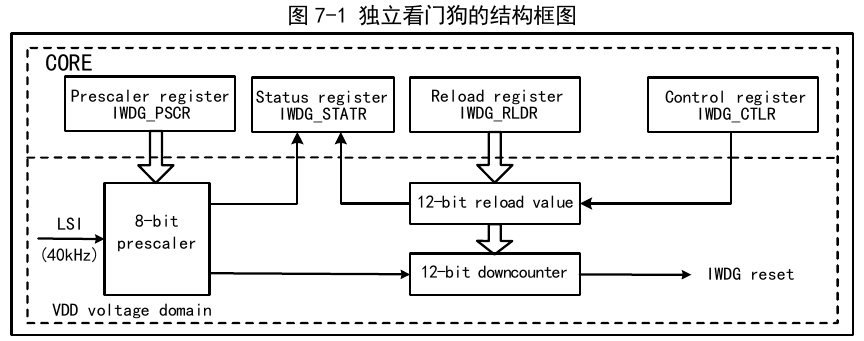

The system includes an Independent Watchdog (IWDG) to detect software faults caused by logic errors and external environmental interference. The IWDG clock source is derived from the LSI and can operate independently of the main program, making it suitable for applications with low precision requirements.
The Independent Watchdog is clocked by the LSI clock, and its function continues to operate normally in Stop and Standby modes. When the watchdog counter decrements to 0, a system reset is generated, so the timeout period is (reload value + 1) clock cycles.

When the system enters debug mode, the IWDG counter can be configured to continue running or stop via the debug module registers.
| Name | Address | Description | Reset Value |
|---|---|---|---|
| R16_IWDG_CTLR | 0x40003000 | Control register | 0x0000 |
| R16_IWDG_PSCR | 0x40003004 | Prescaler register | 0x0000 |
| R16_IWDG_RLDR | 0x40003008 | Reload register | 0x0FFF |
| R16_IWDG_STATR | 0x4000300C | Status register | 0x0000 |
Offset address: 0x00
| 15 | 14 | 13 | 12 | 11 | 10 | 9 | 8 | 7 | 6 | 5 | 4 | 3 | 2 | 1 | 0 |
|---|---|---|---|---|---|---|---|---|---|---|---|---|---|---|---|
| KEY[15:0] | |||||||||||||||
| Bits | Name | Access | Description | Reset |
|---|---|---|---|---|
| [15:0] | KEY[15:0] | WO | Operation key value lock. 0xAAAA: Kick (feed) the watchdog. Load the IWDG_RLDR register value into the Independent Watchdog counter; 0x5555: Allow modification of R16_IWDG_PSCR and R16_IWDG_RLDR registers; 0xCCCC: Start the watchdog. If the hardware watchdog is enabled (configured via user option bytes), this restriction does not apply. |
0 |
Offset address: 0x04
| 15 | 14 | 13 | 12 | 11 | 10 | 9 | 8 | 7 | 6 | 5 | 4 | 3 | 2 | 1 | 0 |
|---|---|---|---|---|---|---|---|---|---|---|---|---|---|---|---|
| Reserved | PR[2:0] | ||||||||||||||
| Bits | Name | Access | Description | Reset |
|---|---|---|---|---|
| [15:3] | Reserved | RO | Reserved. | 0 |
| [2:0] | PR[2:0] | RW | IWDG clock prescaler coefficient. Write 0x5555 to KEY before modifying this field. 000: divide by 4; 001: divide by 8; 010: divide by 16; 011: divide by 32; 100: divide by 64; 101: divide by 128; 110: divide by 256; 111: reserved. IWDG counting time base = LSI / prescaler coefficient. Note: Before reading this field, ensure that the PVU bit in the IWDG_STATR register is 0, otherwise the read value is invalid. |
000b |
Offset address: 0x08
| 15 | 14 | 13 | 12 | 11 | 10 | 9 | 8 | 7 | 6 | 5 | 4 | 3 | 2 | 1 | 0 |
|---|---|---|---|---|---|---|---|---|---|---|---|---|---|---|---|
| Reserved | RL[11:0] | ||||||||||||||
| Bits | Name | Access | Description | Reset |
|---|---|---|---|---|
| [15:12] | Reserved | RO | Reserved. | 0 |
| [11:0] | RL[11:0] | RW | Counter reload value. Write 0x5555 to KEY before modifying this field. After writing 0xAAAA to KEY, the value of this field is loaded into the counter by hardware, and the counter then starts decrementing from this value. Note: Before reading or writing this field, ensure that the RUV bit in the IWDG_STATR register is 0, otherwise read/write access to this field is invalid. |
0xFFF |
Offset address: 0x0C
| 15 | 14 | 13 | 12 | 11 | 10 | 9 | 8 | 7 | 6 | 5 | 4 | 3 | 2 | 1 | 0 |
|---|---|---|---|---|---|---|---|---|---|---|---|---|---|---|---|
| Reserved | RVU | PVU | |||||||||||||
| Bits | Name | Access | Description | Reset |
|---|---|---|---|---|
| [15:2] | Reserved | RO | Reserved. | 0 |
| 1 | RVU | RO | Reload value update flag. Set or cleared by hardware. 1: Reload value update in progress; 0: Reload value update complete (up to 5 LSI cycles). Note: The reload register IWDG_RLDR can only be read/written after the RVU bit is cleared to 0. |
0 |
| 0 | PVU | RO | Clock prescaler coefficient update flag. Set or cleared by hardware. 1: Clock prescaler value update in progress; 0: Clock prescaler value update complete (up to 5 LSI cycles). Note: The prescaler register IWDG_PSCR can only be read/written after the PVU bit is cleared to 0. |
0 |